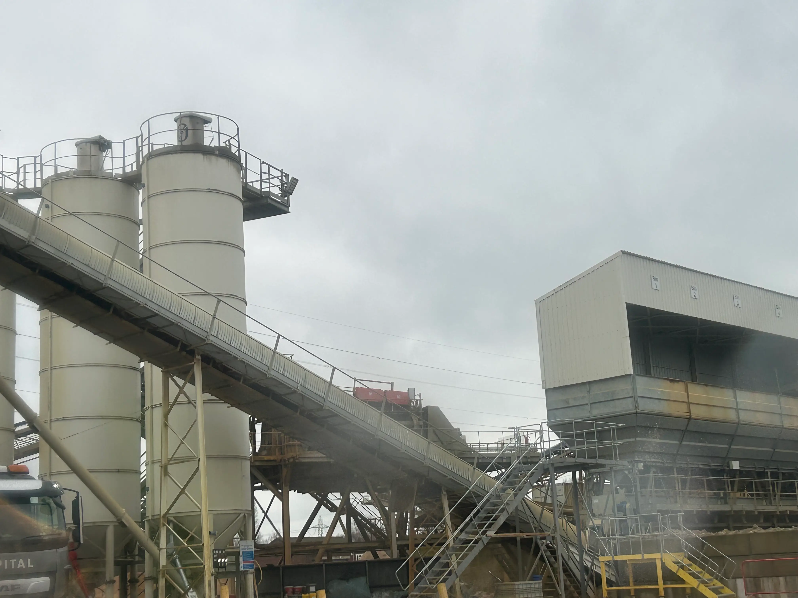
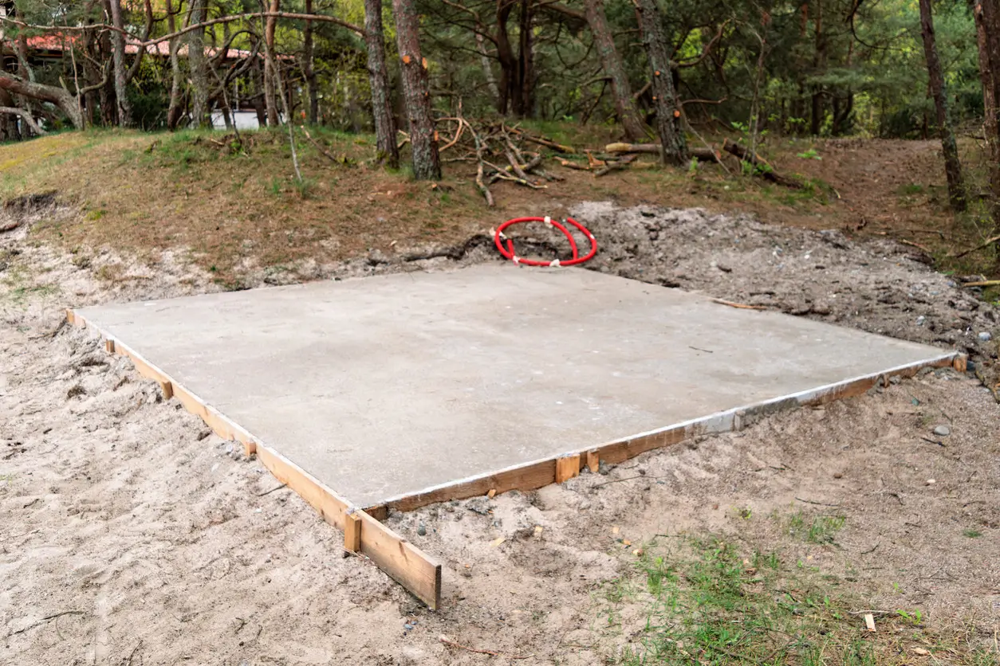
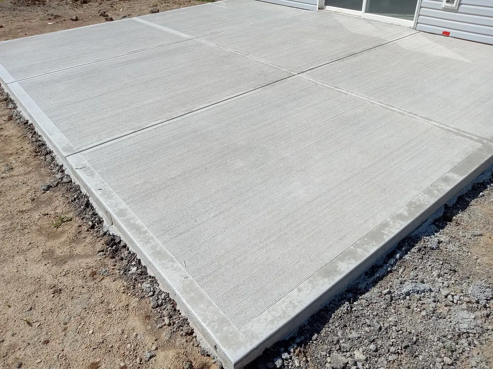
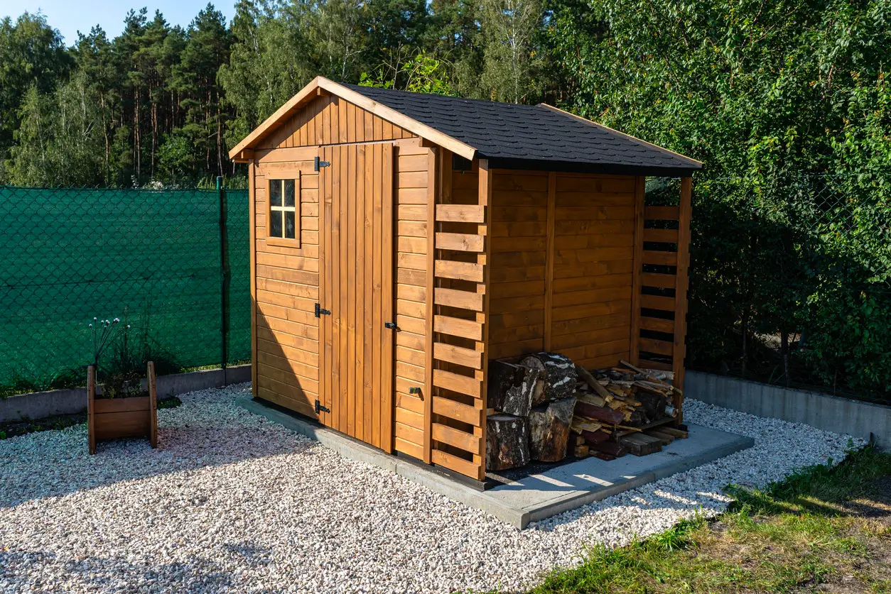

Concrete Shed Base Slough — Delivered & Built Properly
We install concrete shed bases for homeowners across Slough.
Whether you’re placing a garden shed, log cabin, workshop or summerhouse, the base underneath decides how long it lasts, if the foundations (your concrete base) hasn't been installed properly you may find issues later on.
Our concrete bases are prepared, poured and levelled properly so your building sits level and solid from day one.
Local, professional, and done the right way.
Concrete Shed Base Installation in Slough
All of our concrete is supplied through established batching plants serving Slough. All loads are mixed either at the plant or directly in the lorry to ensure consistency, strength and clean placement on site.
In Slough gardens, ground levels and drainage vary a lot. Even the best shed will move, twist or rot faster if the base underneath isn’t flat, compacted and reinforced properly.
What a proper base gives you
- Ground preparation with excavation, weed membrane and compacted sub-base
- Edge forming and fall planning for long-term drainage
- Reinforcement options for heavier sheds and cabins
- A clean, level finish ready for your structure
Every concrete load is checked before leaving the plant for Slough installations.
Recent concrete bases in Slough





Want similar work completed in Slough?
CALL NOW — FREE QUOTEConcrete Shed Bases Built Locally in Slough
From how concrete is mixed to how it’s placed, timing and local planning make a big difference. Using a Slough-based shed base service means working with people who understand local garden layouts, access limits and soil conditions.
Being local means faster delivery, fewer delays and better coordination with nearby batching plants so pours happen when they’re meant to, not rushed or rescheduled.
The end result is a properly built, level concrete shed base that’s planned and installed with Slough conditions in mind.
What local knowledge gives you
- Understanding of Slough property types and garden access
- Faster delivery and cleaner installation timing
- A base designed for long-term stability, not shortcuts
Local planning allows delivery timing and site access to be handled properly on the day.
Planning a Concrete Shed Base in Slough Gardens
One of the most common questions Slough homeowners ask is how large their concrete shed base should actually be. The base normally needs to extend slightly beyond the footprint of the shed, log cabin or summerhouse so the structure sits fully supported without edges overhanging the slab. A properly sized base helps ensure the building sits level and remains stable for years without movement.
Garden buildings across Slough vary hugely in size — from compact storage sheds used for tools and bikes to much larger garden offices, workshops or log cabins. Getting the base dimensions right at the start helps avoid problems later when the building arrives and installers expect a perfectly sized foundation to work from. Even a small difference in size can create installation problems if the base is too small.
When homeowners call us about a concrete shed base in Slough, we normally discuss the building dimensions first. From there we can advise on the ideal slab size, spacing around the structure, and whether extra thickness or reinforcement is worth considering for heavier garden buildings that place greater load on the base.
Ground conditions, access to the garden, and the intended use of the building can also influence how the base is prepared. If you already know the size of the shed you're installing, we can normally give a quick estimate over the phone and explain what the base should look like before installation day.
Concrete Shed Base Installations Across Slough & Nearby Areas
Most of our concrete base work is carried out in Slough, however we also work across nearby areas where homeowners need a properly installed reliable base for sheds, garden rooms and outdoor buildings.
Being based close to these locations allows us to plan installations efficiently and ensure every base is prepared and poured with the same level of care regardless of the property type or garden layout.
Nearby areas we regularly cover
- Concrete shed bases in Maidenhead
- Concrete shed bases in Windsor
- Concrete shed bases in Uxbridge
- Concrete shed bases in Langley
We install concrete bases across Berkshire and surrounding areas, with Slough remaining our primary service location.
Helpful guides
Ready to get a durable shed base in Slough?
Call now for an immediate quote and same-week availability in many Slough neighbourhoods.